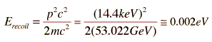

Mossbauer Effect in Iron-57
 |
The study of the Mossbauer effect in Iron-57 has been very fruitful because of the narrow natural linewidth of the 14.4 keV transition. This transition is characterized by: |
While one atom can emit a photon which is absorbed by the reverse transition in an identical atom a short distance away (resonance fluorescence), the same cannot happen for nuclear transitions from isolated nuclei. The reason is the large recoil energy compared to the natural linewidth of the transition.
Using the iron as an example, the 14.4 keV gamma ray has momentum pc=14.4 keV. The recoil momentum of the emitting iron nucleus must match that if it acts as an isolated particle. The recoil energy can be calculated from the momentum, and it is usually convenient in such cases to put everything in electron volts.
The energy of recoil of the iron-57 nucleus is
|  |
|
This is five orders of magnitude greater than the natural linewidth of the iron transition which produced the photon. This recoil energy reduces the photon energy by this amount as seen by a potential absorbing nucleus at rest.
To get resonance absorption, you have two options: nail down the nucleus in a crystal lattice so that it has almost no recoil, or move the source and absorber relative to each other so that the Doppler shift of the photon moves it to the necessary energy for absorption.
The Doppler shift of a photon is a relativistic Doppler shift given by
If v/c<<1 then this may be simplified by
While this is possible, and was done with centrifuge tips, there is generally a better way.
Mossbauer found that if he cooled the emitter, you could reach a condition where the emitting nucleus could not recoil by itself. Qualitatively, the reason is that at sufficiently low temperatures an atom in a crystal lattice cannot recoil individually. The quantization of the vibrational states of the lattice causes the energy of recoil to be absorbed by the lattice as a whole.
It was a great breakthrough to realize that you could get resonance absorption of gamma rays by putting the source nuclei in a crystal and cooling it. To see how many iron nuclei would have to recoil together to keep the gamma within the natural linewidth:
Compared to Avogadro's number, that's not very many. In fact, it is a speck of matter too small to be seen in an optical microscope. It would follow that any tiny crystal within a cobalt-57-containing piece of iron would meet the conditions for resonance absorption if cooled sufficiently.
It was established that you can produce resonant gamma absorption by cooling the iron sample. You can also destroy that resonance by moving the source relative to the absorber. Returning to the Doppler expression
gives v=0.0002 m/s to produce enough Doppler shift of the emitted gamma to detune the resonant absorption. This is more than a curiosity-- this is the basis for an incredibly sensitive instrument. Pound and Rebka needed just such an instrument to test the gravitational red shift.
| Iron nuclear Zeeman effect |
References
Rohlf
Sec 11.7
Tipler & Llewellyn
Sec 11.4